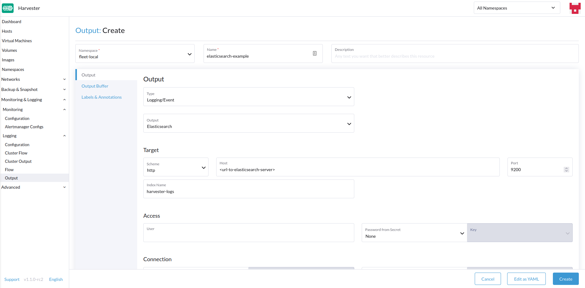
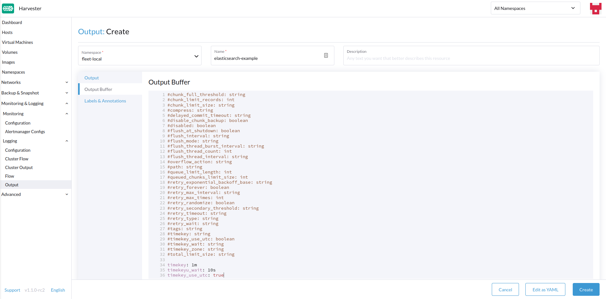
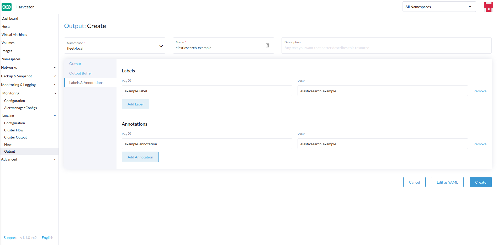
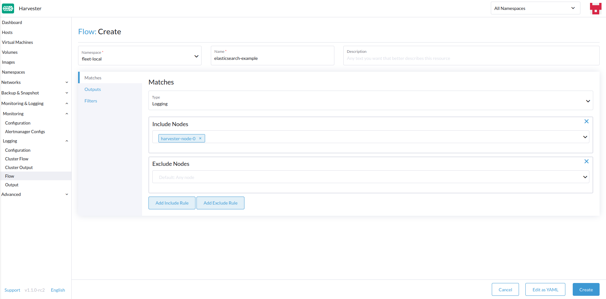
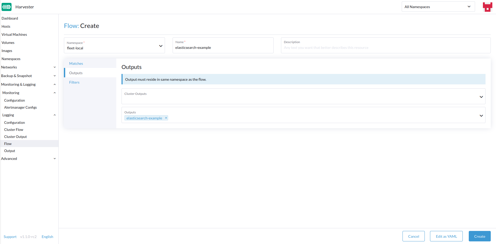
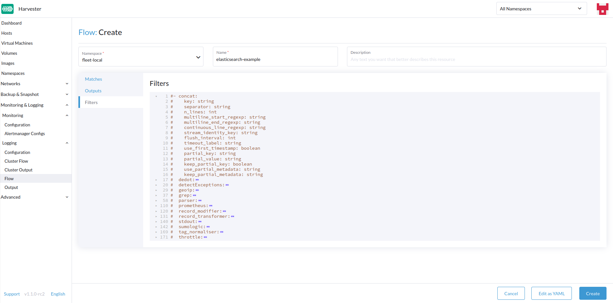

Logging
It is important to know what is happening/has happened in the Harvester Cluster.
Harvester collects the cluster running log, kubernetes audit and event log right after the cluster is powered on, which is helpful for monitoring, logging, auditing and troubleshooting.
Harvester supports sending those logs to various types of log servers.
|
The size of logging data is related to the cluster scale, workload and other factors. |
The logging feature is now implemented with an addon and is disabled by default in new installations.
Users can enable/disable the rancher-logging add-on from the Harvester UI after installation.
Users can also enable/disable the rancher-logging addon in their Harvester installation by customizing the configuration file.
For Harvester clusters upgraded from version v1.1.x, the logging feature is converted to an addon automatically and kept enabled as before.
High-level Architecture
Both Harvester and Rancher use the Logging Operator to manage specific components and operations of the internal logging infrastructure.
In Harvester’s practice, the Logging, Audit and Event shares one architecture, the Logging is the infrastructure, while the Audit and Event are on top of it.
Logging
The Harvester logging infrastructure allows you to aggregate Harvester logs into an external service such as Graylog, Elasticsearch, Splunk, Grafana Loki and others.
Collected Logs
See below for a list logs that are collected:
-
Logs from all cluster
Pods -
Kernel logs from each
node -
Logs from select systemd services from each node
-
rke2-server -
rke2-agent -
rancherd -
rancher-system-agent -
wicked -
iscsid
-
|
Users are able to configure and modify where the aggregated logs are sent, as well as some basic filtering. It is not supported to change which logs are collected. |
Configuring Log Resources
Underneath Logging Operator are Fluentd and Fluent Bit, which handle log collection and routing. If desired, you can modify how many resources are dedicated to those components.
From UI
-
Go to the Advanced > Addons page and select the rancher-logging addon.
-
From the Fluentbit tab, change the resource requests and limits.
-
From the Fluentd tab, change the resource requests and limits.
-
Select Save when finished configuring the settings for the rancher-logging addon.
|
The UI configuration is only visible when the rancher-logging addon is enabled. |
From CLI
You can use the following kubectl command to change resource configurations for the rancher-logging addon: kubectl edit addons.harvesterhci.io -n cattle-logging-system rancher-logging.
The resource path and default values are as follows.
apiVersion: harvesterhci.io/v1beta1
kind: Addon
metadata:
name: rancher-logging
namespace: cattle-logging-system
spec:
valuesContent: |
fluentbit:
resources:
limits:
cpu: 200m
memory: 200Mi
requests:
cpu: 50m
memory: 50Mi
fluentd:
resources:
limits:
cpu: 1000m
memory: 800Mi
requests:
cpu: 100m
memory: 200Mi
|
You can still make configuration adjustments when the addon is disabled. However, these changes only take effect when you re-enable the addon. |
Dangling Resources Check
When enabling the rancher-logging add-on, you may encounter the following error:
You may also observe that deployments related to the add-on are not fully rolled out.
To prevent the error from occurring again, perform the following actions before enabling the add-on:
-
Update or delete the affected dangling resources.
-
Add the annotation
harvesterhci.io/skipRancherLoggingAddonWebhookCheck: "true"to the add-on.
Configuring Log Destinations
Logging operations are backed by the Logging Operator and controlled using Fluentd resources, particularly Flow and ClusterFlow and Output and ClusterOutput. You can route and filter logs by applying these CRDs to the Harvester cluster.
When applying new Outputs and Flows to the cluster, it can take some time for the logging operator to effectively apply them. So please allow a few minutes for the logs to start flowing.
Clustered vs Namespaced
One important thing to understand when routing logs is the difference between ClusterFlow vs Flow and ClusterOutput vs Output. The main difference between the clustered and non-clustered version of each is that the non-clustered versions are namespaced.
The biggest implication of this is that Flows can only access Outputs that are within the same namespace, but can still access any ClusterOutput.
For more information, see the documentation:
From UI
|
UI images are for |
Creating Outputs
-
Choose the option to create a new
OutputorClusterOutput. -
If creating an
Output, select the desired namespace. -
Add a name for the resources.
-
Select the logging type.
-
Select the logging output type.
 -
Configure the output buffer if necessary.
 -
Add any labels or annotations.
 -
Once done, click
Createon the lower right.
|
Depending on the output selected (Splunk, Elasticsearch, etc), there will be additional fields to specify in the form. |
Output
The form shows the fields that are available for the selected output.
Output Buffer
The editor allows you to describe the preferred output buffer behavior using various fields.
Creating Flows
-
Choose the option to create a new
FloworClusterFlow. -
If creating a
Flow, select the desired namespace. -
Add a name for the resource.
-
Select any nodes whose logs to include or exclude.
 -
Select target
OutputsandClusterOutputs. -
Add any filters if desired.
 -
Once done, click
Createon the lower left.
Matches
Matches allow you to filter which logs you want to include in the Flow. The form only allows you to include or exclude node logs, but if needed, you can add other match rules supported by the resource by selecting Edit as YAML.
For more information about the match directive, see Match statement.
Outputs
Outputs allow you to select one or more OutputRefs to send the aggregated logs to. When creating or editing a Flow / ClusterFlow, it is required that the user selects at least one Output.
|
There must be at least one existing |
Filters
Filters allow you to transform, process, and mutate the logs. For more information, see the list of supported filters.
From CLI
To configure log routes via the command line, you only need to define the YAML files for the relevant resources:
# elasticsearch-logging.yaml
apiVersion: logging.banzaicloud.io/v1beta1
kind: Output
metadata:
name: elasticsearch-example
namespace: fleet-local
labels:
example-label: elasticsearch-example
annotations:
example-annotation: elasticsearch-example
spec:
elasticsearch:
host: <url-to-elasticsearch-server>
port: 9200
---
apiVersion: logging.banzaicloud.io/v1beta1
kind: Flow
metadata:
name: elasticsearch-example
namespace: fleet-local
spec:
match:
- select: {}
globalOutputRefs:
- elasticsearch-exampleAnd then apply them:
kubectl apply -f elasticsearch-logging.yamlReferencing Secrets
You can define secret values (in YAML format) using any of the following methods:
The simplest is to use the value key, which is a simple string value for the desired secret. This method should only be used for testing and never in production:
aws_key_id:
value: "secretvalue"The next is to use valueFrom, which allows referencing a specific value from a secret by a name and key pair:
aws_key_id:
valueFrom:
secretKeyRef:
name: <kubernetes-secret-name>
key: <kubernetes-secret-key>Some plugins require a file to read from rather than simply receiving a value from the secret (this is often the case for CA cert files). In these cases, you need to use mountFrom, which will mount the secret as a file to the underlying fluentd deployment and point the plugin to the file. The valueFrom and mountFrom object look the same:
tls_cert_path:
mountFrom:
secretKeyRef:
name: <kubernetes-secret-name>
key: <kubernetes-secret-key>For more information, see Secret definition.
Example Outputs
-
Elasticsearch
-
Graylog
-
Splunk
-
Loki
For the simplest deployment, you can deploy Elasticsearch on your local system using docker:
sudo docker run --name elasticsearch -p 9200:9200 -p 9300:9300 -e xpack.security.enabled=false -e node.name=es01 -e discovery.type=single-node -it docker.elastic.co/elasticsearch/elasticsearch:8.16.6|
To use Elasticsearch with SUSE Virtualization v1.5.0, ensure that the Elasticsearch server is running version 8.11.0 or later. You must upgrade Elasticsearch when the |
Make sure that you have set vm.max_map_count to be >= 262144 or the docker command above will fail. Once the Elasticsearch server is up, you can create the yaml file for the ClusterOutput and ClusterFlow:
cat << EOF > elasticsearch-example.yaml
apiVersion: logging.banzaicloud.io/v1beta1
kind: ClusterOutput
metadata:
name: elasticsearch-example
namespace: cattle-logging-system
spec:
elasticsearch:
host: 192.168.0.119
port: 9200
buffer:
timekey: 1m
timekey_wait: 30s
timekey_use_utc: true
---
apiVersion: logging.banzaicloud.io/v1beta1
kind: ClusterFlow
metadata:
name: elasticsearch-example
namespace: cattle-logging-system
spec:
match:
- select: {}
globalOutputRefs:
- elasticsearch-example
EOFAnd apply the file:
kubectl apply -f elasticsearch-example.yamlAfter allowing some time for the logging operator to apply the resources, you can test that the logs are flowing:
$ curl localhost:9200/fluentd/_search
{
"took": 1,
"timed_out": false,
"_shards": {
"total": 5,
"successful": 5,
"skipped": 0,
"failed": 0
},
"hits": {
"total": 11603,
"max_score": 1,
"hits": [
{
"_index": "fluentd",
"_type": "fluentd",
"_id": "yWHr0oMBXcBggZRJgagY",
"_score": 1,
"_source": {
"stream": "stderr",
"logtag": "F",
"message": "I1013 02:29:43.020384 1 csi_handler.go:248] Attaching \"csi-974b4a6d2598d8a7a37b06d06557c428628875e077dabf8f32a6f3aa2750961d\"",
"kubernetes": {
"pod_name": "csi-attacher-5d4cc8cfc8-hd4nb",
"namespace_name": "longhorn-system",
"pod_id": "c63c2014-9556-40ce-a8e1-22c55de12e70",
"labels": {
"app": "csi-attacher",
"pod-template-hash": "5d4cc8cfc8"
},
"annotations": {
"cni.projectcalico.org/containerID": "857df09c8ede7b8dee786a8c8788e8465cca58f0b4d973c448ed25bef62660cf",
"cni.projectcalico.org/podIP": "10.52.0.15/32",
"cni.projectcalico.org/podIPs": "10.52.0.15/32",
"k8s.v1.cni.cncf.io/network-status": "[{\n \"name\": \"k8s-pod-network\",\n \"ips\": [\n \"10.52.0.15\"\n ],\n \"default\": true,\n \"dns\": {}\n}]",
"k8s.v1.cni.cncf.io/networks-status": "[{\n \"name\": \"k8s-pod-network\",\n \"ips\": [\n \"10.52.0.15\"\n ],\n \"default\": true,\n \"dns\": {}\n}]",
"kubernetes.io/psp": "global-unrestricted-psp"
},
"host": "harvester-node-0",
"container_name": "csi-attacher",
"docker_id": "f10e4449492d4191376d3e84e39742bf077ff696acbb1e5f87c9cfbab434edae",
"container_hash": "sha256:03e115718d258479ce19feeb9635215f98e5ad1475667b4395b79e68caf129a6",
"container_image": "docker.io/longhornio/csi-attacher:v3.4.0"
}
}
},
...
]
}
}apiVersion: logging.banzaicloud.io/v1beta1
kind: ClusterFlow
metadata:
name: "all-logs-gelf-hs"
namespace: "cattle-logging-system"
spec:
globalOutputRefs:
- "example-gelf-hs"
---
apiVersion: logging.banzaicloud.io/v1beta1
kind: ClusterOutput
metadata:
name: "example-gelf-hs"
namespace: "cattle-logging-system"
spec:
gelf:
host: "192.168.122.159"
port: 12202
protocol: "udp"apiVersion: logging.banzaicloud.io/v1beta1
kind: ClusterOutput
metadata:
name: harvester-logging-splunk
namespace: cattle-logging-system
spec:
splunkHec:
hec_host: 192.168.122.101
hec_port: 8088
insecure_ssl: true
index: harvester-log-index
hec_token:
valueFrom:
secretKeyRef:
key: HECTOKEN
name: splunk-hec-token2
buffer:
chunk_limit_size: 3MB
timekey: 2m
timekey_wait: 1m
---
apiVersion: logging.banzaicloud.io/v1beta1
kind: ClusterFlow
metadata:
name: harvester-logging-splunk
namespace: cattle-logging-system
spec:
filters:
- tag_normaliser: {}
match:
globalOutputRefs:
- harvester-logging-splunkYou can follow the instructions in the logging HEP on deploying and viewing cluster logs via Grafana Loki.
apiVersion: logging.banzaicloud.io/v1beta1
kind: ClusterFlow
metadata:
name: harvester-loki
namespace: cattle-logging-system
spec:
match:
- select: {}
globalOutputRefs:
- harvester-loki
---
apiVersion: logging.banzaicloud.io/v1beta1
kind: ClusterOutput
metadata:
name: harvester-loki
namespace: cattle-logging-system
spec:
loki:
url: http://loki-stack.cattle-logging-system.svc:3100
extra_labels:
logOutput: harvester-lokiAudit
Harvester collects Kubernetes audit and is able to send the audit to various types of log servers.
The policy file to guide kube-apiserver is here.
Audit Definition
In kubernetes, the audit data is generated by kube-apiserver according to defined policy.
... Audit policy Audit policy defines rules about what events should be recorded and what data they should include. The audit policy object structure is defined in the audit.k8s.io API group. When an event is processed, it's compared against the list of rules in order. The first matching rule sets the audit level of the event. The defined audit levels are: None - don't log events that match this rule. Metadata - log request metadata (requesting user, timestamp, resource, verb, etc.) but not request or response body. Request - log event metadata and request body but not response body. This does not apply for non-resource requests. RequestResponse - log event metadata, request and response bodies. This does not apply for non-resource requests.
Audit Log Format
Audit Log Format in Kubernetes
Kubernetes apiserver logs audit with following JSON format into a local file.
{
"kind":"Event",
"apiVersion":"audit.k8s.io/v1",
"level":"Metadata",
"auditID":"13d0bf83-7249-417b-b386-d7fc7c024583",
"stage":"RequestReceived",
"requestURI":"/apis/flowcontrol.apiserver.k8s.io/v1beta2/prioritylevelconfigurations?fieldManager=api-priority-and-fairness-config-producer-v1",
"verb":"create",
"user":{"username":"system:apiserver","uid":"d311c1fe-2d96-4e54-a01b-5203936e1046","groups":["system:masters"]},
"sourceIPs":["::1"],
"userAgent":"kube-apiserver/v1.24.7+rke2r1 (linux/amd64) kubernetes/e6f3597",
"objectRef":{"resource":"prioritylevelconfigurations",
"apiGroup":"flowcontrol.apiserver.k8s.io",
"apiVersion":"v1beta2"},
"requestReceivedTimestamp":"2022-10-19T18:55:07.244781Z",
"stageTimestamp":"2022-10-19T18:55:07.244781Z"
}Audit Log Output/ClusterOutput
To output audit related log, the Output/ClusterOutput requires the value of loggingRef to be harvester-kube-audit-log-ref.
When you configure from the Harvester dashboard, the field is added automatically.
Select type Audit Only from the Type drpo-down list.
When you configure from the CLI, please add the field manually.
Example:
apiVersion: logging.banzaicloud.io/v1beta1
kind: ClusterOutput
metadata:
name: "harvester-audit-webhook"
namespace: "cattle-logging-system"
spec:
http:
endpoint: "http://192.168.122.159:8096/"
open_timeout: 3
format:
type: "json"
buffer:
chunk_limit_size: 3MB
timekey: 2m
timekey_wait: 1m
loggingRef: harvester-kube-audit-log-ref # this reference is fixed and must be here
Audit Log Flow/ClusterFlow
To route audit related logs, the Flow/ClusterFlow requires the value of loggingRef to be harvester-kube-audit-log-ref.
When you configure from the Harvester dashboard, the field is added automatically.
Select type Audit.
When you config from the CLI, please add the field manually.
Example:
apiVersion: logging.banzaicloud.io/v1beta1
kind: ClusterFlow
metadata:
name: "harvester-audit-webhook"
namespace: "cattle-logging-system"
spec:
globalOutputRefs:
- "harvester-audit-webhook"
loggingRef: harvester-kube-audit-log-ref # this reference is fixed and must be here
Event
Harvester collects Kubernetes event and is able to send the event to various types of log servers.
Event Definition
Kubernetes events are objects that show you what is happening inside a cluster, such as what decisions were made by the scheduler or why some pods were evicted from the node. All core components and extensions (operators/controllers) may create events through the API Server.
Events have no direct relationship with log messages generated by the various components, and are not affected with the log verbosity level. When a component creates an event, it often emits a corresponding log message. Events are garbage collected by the API Server after a short time (typically after an hour), which means that they can be used to understand issues that are happening, but you have to collect them to investigate past events.
Events are the first thing to look at for application, as well as infrastructure operations when something is not working as expected. Keeping them for a longer period is essential if the failure is the result of earlier events, or when conducting post-mortem analysis.
Event Log Format
Event Log Format in Kubernetes
A kubernetes event example:
{
"apiVersion": "v1",
"count": 1,
"eventTime": null,
"firstTimestamp": "2022-08-24T11:17:35Z",
"involvedObject": {
"apiVersion": "kubevirt.io/v1",
"kind": "VirtualMachineInstance",
"name": "vm-ide-1",
"namespace": "default",
"resourceVersion": "604601",
"uid": "1bd4133f-5aa3-4eda-bd26-3193b255b480"
},
"kind": "Event",
"lastTimestamp": "2022-08-24T11:17:35Z",
"message": "VirtualMachineInstance defined.",
"metadata": {
"creationTimestamp": "2022-08-24T11:17:35Z",
"name": "vm-ide-1.170e43cbdd833b62",
"namespace": "default",
"resourceVersion": "604626",
"uid": "0114f4e7-1d4a-4201-b0e5-8cc8ede202f4"
},
"reason": "Created",
"reportingComponent": "",
"reportingInstance": "",
"source": {
"component": "virt-handler",
"host": "harv1"
},
"type": "Normal"
},
Event Log Format before Being Sent to Log Servers
Each event log has the format of: {"stream":"","logtag":"F","message":"","kubernetes":{""}}. The kubernetes event is in the field message.
{
"stream":"stdout",
"logtag":"F",
"message":"{
\\"verb\\":\\"ADDED\\",
\\"event\\":{\\"metadata\\":{\\"name\\":\\"vm-ide-1.170e446c3f890433\\",\\"namespace\\":\\"default\\",\\"uid\\":\\"0b44b6c7-b415-4034-95e5-a476fcec547f\\",\\"resourceVersion\\":\\"612482\\",\\"creationTimestamp\\":\\"2022-08-24T11:29:04Z\\",\\"managedFields\\":[{\\"manager\\":\\"virt-controller\\",\\"operation\\":\\"Update\\",\\"apiVersion\\":\\"v1\\",\\"time\\":\\"2022-08-24T11:29:04Z\\"}]},\\"involvedObject\\":{\\"kind\\":\\"VirtualMachineInstance\\",\\"namespace\\":\\"default\\",\\"name\\":\\"vm-ide-1\\",\\"uid\\":\\"1bd4133f-5aa3-4eda-bd26-3193b255b480\\",\\"apiVersion\\":\\"kubevirt.io/v1\\",\\"resourceVersion\\":\\"612477\\"},\\"reason\\":\\"SuccessfulDelete\\",\\"message\\":\\"Deleted PodDisruptionBudget kubevirt-disruption-budget-hmmgd\\",\\"source\\":{\\"component\\":\\"disruptionbudget-controller\\"},\\"firstTimestamp\\":\\"2022-08-24T11:29:04Z\\",\\"lastTimestamp\\":\\"2022-08-24T11:29:04Z\\",\\"count\\":1,\\"type\\":\\"Normal\\",\\"eventTime\\":null,\\"reportingComponent\\":\\"\\",\\"reportingInstance\\":\\"\\"}
}",
"kubernetes":{"pod_name":"harvester-default-event-tailer-0","namespace_name":"cattle-logging-system","pod_id":"d3453153-58c9-456e-b3c3-d91242580df3","labels":{"app.kubernetes.io/instance":"harvester-default-event-tailer","app.kubernetes.io/name":"event-tailer","controller-revision-hash":"harvester-default-event-tailer-747b9d4489","statefulset.kubernetes.io/pod-name":"harvester-default-event-tailer-0"},"annotations":{"cni.projectcalico.org/containerID":"aa72487922ceb4420ebdefb14a81f0d53029b3aec46ed71a8875ef288cde4103","cni.projectcalico.org/podIP":"10.52.0.178/32","cni.projectcalico.org/podIPs":"10.52.0.178/32","k8s.v1.cni.cncf.io/network-status":"[{\\n \\"name\\": \\"k8s-pod-network\\",\\n \\"ips\\": [\\n \\"10.52.0.178\\"\\n ],\\n \\"default\\": true,\\n \\"dns\\": {}\\n}]","k8s.v1.cni.cncf.io/networks-status":"[{\\n \\"name\\": \\"k8s-pod-network\\",\\n \\"ips\\": [\\n \\"10.52.0.178\\"\\n ],\\n \\"default\\": true,\\n \\"dns\\": {}\\n}]","kubernetes.io/psp":"global-unrestricted-psp"},"host":"harv1","container_name":"harvester-default-event-tailer-0","docker_id":"455064de50cc4f66e3dd46c074a1e4e6cfd9139cb74d40f5ba00b4e3e2a7ab2d","container_hash":"docker.io/banzaicloud/eventrouter@sha256:6353d3f961a368d95583758fa05e8f4c0801881c39ed695bd4e8283d373a4262","container_image":"docker.io/banzaicloud/eventrouter:v0.1.0"}
}
Event Log Output/ClusterOutput
Events share the Output/ClusterOutput with Logging.
Select Logging/Event from the Type drop-down list.
Event Log Flow/ClusterFlow
Compared with the normal Logging Flow/ClusterFlow, the Event related Flow/ClusterFlow, has one more match field with the value of event-tailer.
When you configure from the Harvester dashboard, the field is added automatically.
Select Event from the Type drop-down list.
When you configure from the CLI, please add the field manually.
Example:
apiVersion: logging.banzaicloud.io/v1beta1
kind: ClusterFlow
metadata:
name: harvester-event-webhook
namespace: cattle-logging-system
spec:
filters:
- tag_normaliser: {}
match:
- select:
labels:
app.kubernetes.io/name: event-tailer
globalOutputRefs:
- harvester-event-webhook